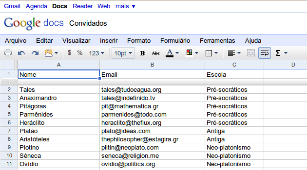
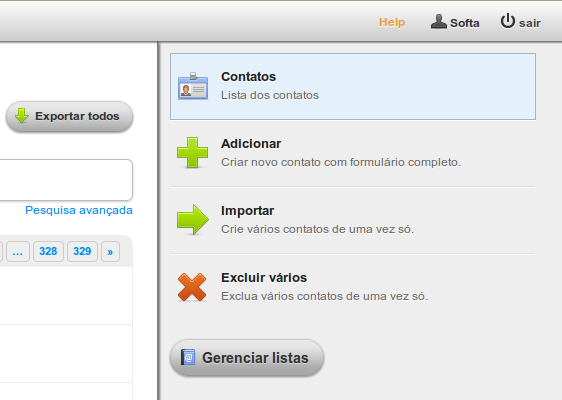
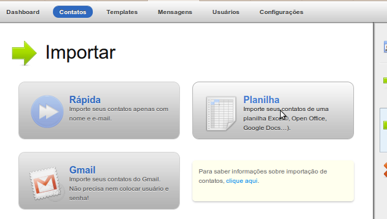
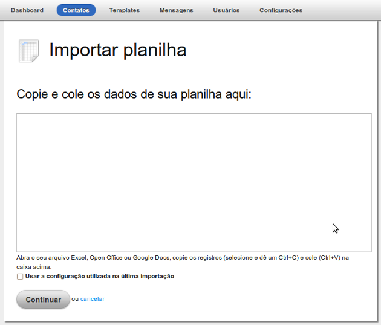
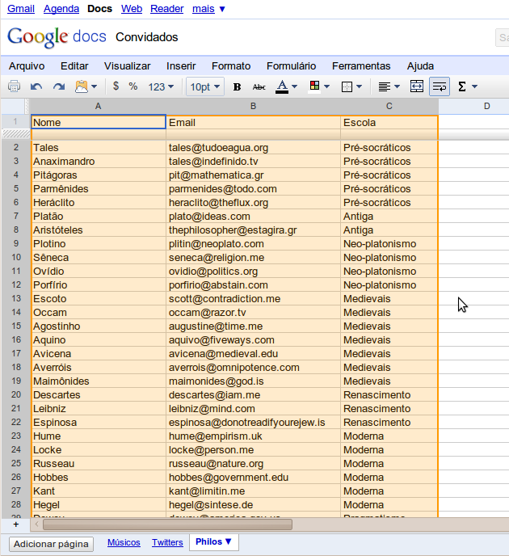
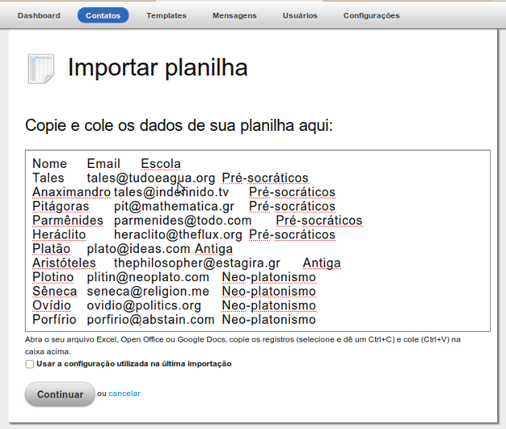
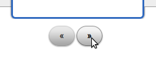
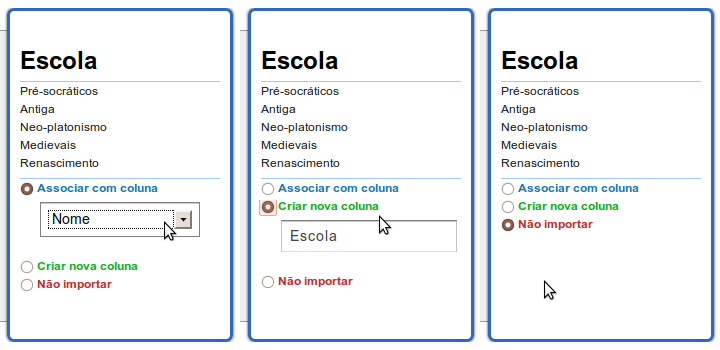
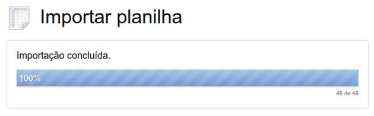

1 Formatando a planilha
1.1 Cabeçalhos
A importação do Mailee.me aceita apenas planilhas com cabeçalho. O cabeçalho contém o nome dos campos que você está importando e é sempre a primeira linha da planilha.
No exemplo abaixo, você pode ver uma planilha do Google Docs com três colunas. A primeira linha, com os campos Nome, Email e Escola, é o cabeçalho.

Não se esqueça de colocar o cabeçalho corretamente e conferir os dados. A maior parte dos problemas que nossos clientes encontram ao realizar importação de planilhas se deve a ausencia de cabeçalhos ou a cabeçalhos incompletos.
1.2 Conteúdo
O conteúdo dos campos pode ser o que você quiser. O único uso que o Mailee.me faz deles é para encontrar automaticamente campos como email e nome. Fique atento, então, pois se você colocar uma coluna com nome Email e ela não contiver emails, o Mailee.me não irá associá-la por padrão ao email dos contatos, preferindo uma coluna cujos dados batam com o formato correto.
2 Colocando a planilha no Mailee.me
Na tela de contatos, localize no menu à direita o item Importar.

Em seguida, escolha a opção Planilha.

Chegamos lá. A tela abaixo é a tela de importação via planilha:

Agora você vai até a sua planilha, seleciona todos os elementos (geralmente o atalho Crtl+A funciona), copia (Ctrl+C) e cola (Ctrl+V) no campo do Mailee.me.


Se é a primeira vez que você está importando, você não verá a opção Usar a configuração utilizada na última importação, que aparece na imagem. Se você realiza importações periodicamente e o formato dos dados é o mesmo (as mesmas colunas), você poderá marcar esta opção. Fazendo isto, você não precisará configurar a importação (que veremos como fazer adiante) e o sistema irá diretamente para a tela de progresso.
Se você marcar a opção Usar a configuração utilizada na última importação e os campos do arquivo importado forem diferentes da última importação, você provavelmente receberá um erro de importação na tela seguinte. Mas nem tudo está perdido: simplesmente a importação não será feita, não gerando nenhum erro em seus contatos. Você poderá refazer a importação, desta vez não marcando a opção.
3 Configurando a importação
Após enviar os dados, se você não tiver escolhido a opção de utilizar a última importação, você será encaminhado para a tela de configuração da importação. Nesta tela serão apresentados todos os campos do seu arquivo em uma lista horizontal.

Você pode navegar entre os campos utilizando os dois botões de navegação abaixo da lista. Para cada coluna você tem três opções:
- Associar a coluna com um campo do Mailee.me
- A importação irá inserir ou atualizar os valores desta coluna no campo do Mailee.me
- Criar uma nova coluna
- A importação irá criar um campo personalizado, e inserir os valores desta coluna neste campo
- Não importar
- A importação irá ignorar esta coluna

É obrigatório que ao menos uma coluna seja associada ao campo Email.
Defina a ação correta para todas as colunas, marque as listas nas quais você deseja inserir os contatos e clique no botão de continuar. Em seguida você será enviado para a tela que apresenta a barra de progresso da importação:

Você não precisa ficar nesta tela para que a importação seja realizada. Você pode continuar trabalhado no Mailee.me, ler algum artigo para aprender mais sobre o sistema ou então aproveitar para tomar um café.
Todas as importações em andamento e finalizadas nas últimas horas ficam visíveis no Dashboard e também na tela inicial de importação.
4 O filtro do Mailee.me
Após a importação, você poderá ver seus contatos listados. Por padrão, o Mailee.me define os contatos com o status Em análise. Estes contatos passarão pelo filtro do Mailee.me. Este filtro irá invalidar automaticamente os contatos cujo domínio não exista ou não esteja corretamente configurado para receber emails, cujo usuário (a parte inicial do email) não exista, ou que sigam algum padrão suspeito.
Estas verificações são úteis para três propósitos:
- Primeiro, elas já limpam a sua base, reduzindo seus custos.
- Segundo, elas melhoram a entregabilidade geral da sua base, pois você enviará um número menor de mensagens erradas.
- Terceiro, é por meio deste filtro que podemos identificar clientes que porventura estejam tendo práticas não respeitosas de email marketing (também conhecidas como SPAM).
Ao identificarmos um usuário do Mailee.me com importações suspeitas, realizamos uma análise do histórico deste, e caso a suspeita se confirme o usuário é notificado e sua conta excluída. Assim, todos os outros clientes ganham, pois podem ficar tranquilos que estão utilizando um produto que segue não apenas as melhores práticas de mercado, mas está constantemente melhorando as ferramentas de análise para identificação de SPAM.
Saiba mais sobre os status e o ciclo de vida dos contatos aqui.